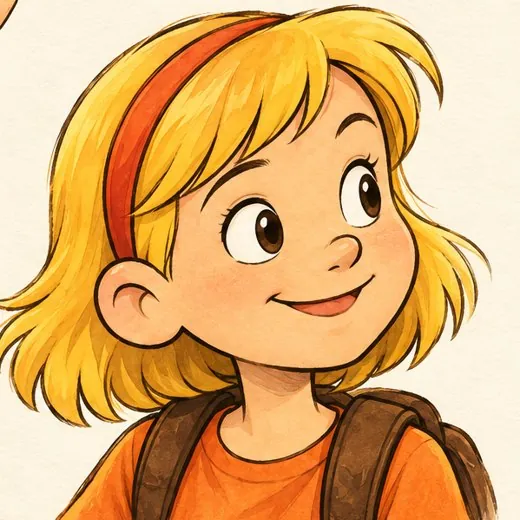
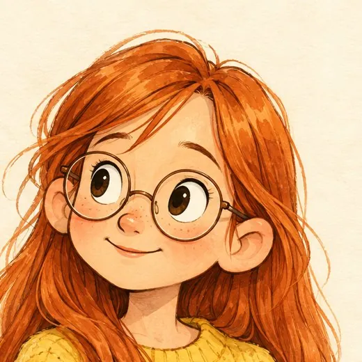
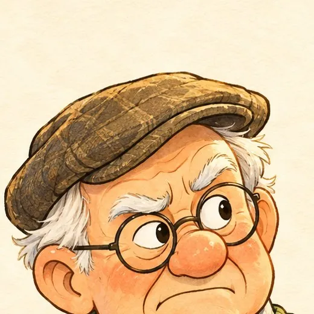
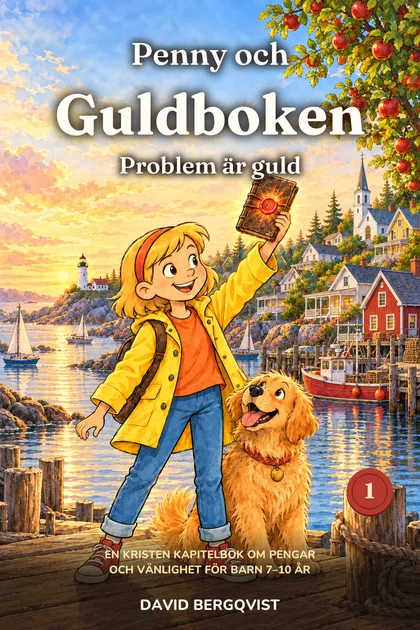
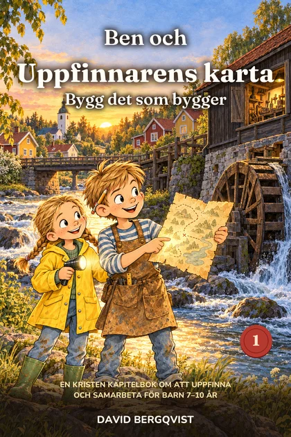
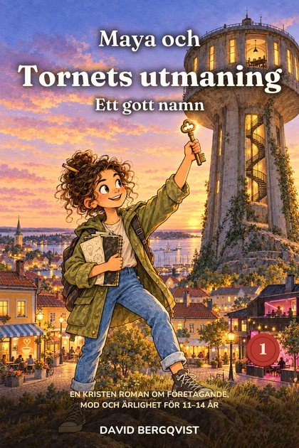
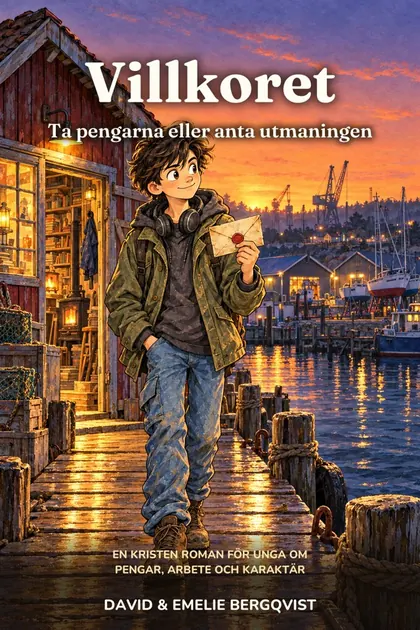
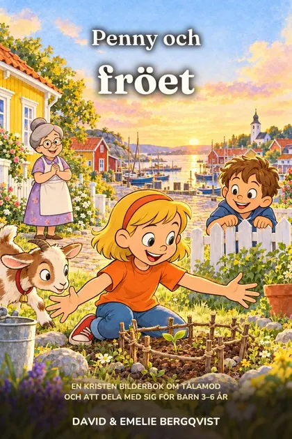

Kapitelböcker och bilderböcker där barn lär sig det som de flesta av oss fick lära oss den hårda vägen: att problem är möjligheter, att pengar är ett kvitto på att man har hjälpt någon, och att den som är trogen i det lilla får ansvar för mycket. Inga pekpinnar. Bara berättelser som barnen tjatar om att få höra mer av.
”Jag ville att mina barn skulle få växa upp med de berättelser jag själv aldrig fick. Så vi började skriva dem.”
Vi heter David och Emelie, en svensk familj av byggare och skapare som numera bor i södra Frankrike. David har byggt ett hus på Vrångö med sina egna händer och drivit egna företag, och Emelie driver sitt eget smyckesmärke, PS46 Jewelry. På vägen lärde vi oss saker om arbete, pengar och att tjäna andra som ingen lärde oss som barn.
När vi letade efter böcker som kunde lära våra egna barn det här hittade vi två sorter: blank underhållning utan något under ytan, eller välmenande lektioner som barn slutar lyssna på efter en sida. Vi ville ha båda delarna. En berättelse som griper tag, och sanningar som stannar kvar.
Så vi skrev böckerna vi själva hade velat växa upp med. Varenda en är något vi skulle läsa för våra egna barn i kväll.
I Penny och Guldboken har Pennys gammelmorfar lämnat sin livsvisdom bakom sju vaxsigill. Hon får bara öppna nästa när hon har levt det förra.
En liten kuststad vid havet, ett rött hus på Ekgatan, och människorna som dina barn får växa upp med.

Nyfiken och otålig. Ger aldrig upp. Lovar lite för mycket och ser alltid människor.

Pennys bästa vän. Tänker innan hon pratar, räknar varje krona och ser till att allt fungerar.
Lillebror. Frågar ”varför?” om allt. Tar varje uppdrag på största allvar.
Ger aldrig svar, bara frågor. ”Och vad tror du själv?”

Butter granne med dålig rygg och det största äppelträdet i Ekvik. Mjuk inuti.
Rivalen med den nya cykeln och läskståndet. Inte så tuff som han ser ut.
Kapitel som slutar spännande, riktiga misstag och roliga lillebröder. Barnen lär sig genom att se karaktärerna försöka, misslyckas och komma på det själva.
Tron märks i hur karaktärerna tänker, ber och väljer, med ett kort bibelord där det hör hemma. Aldrig predikande.
Varje bok slutar med frågor att prata om tillsammans, så att godnattsagan blir ett samtal om det som verkligen betyder något.
Från de första bilderböckerna till ungdomsromaner, med samma värderingar hela vägen. Varje serie följer en huvudperson som ditt barn får växa upp tillsammans med.

Fyra veckor. 2 400 kronor. Sju vaxsigill. En serie kapitelböcker om pengar, vänlighet och mod.
Bok 1 kommer snartLäs mer →
Gammelfarfars gamla kvarn ska rivas. En gulnad karta, fem ledtrådar och en pojke som lär sig att bygga det som bygger.
2027Läs mer →
Ett hemligt råd i ett gammalt vattentorn. Trettio dagar, tvåhundra kronor och en utmaning: skapa så mycket värde du kan.
2027Läs mer →
Ta pengarna i dag, eller klara fem villkor under ett år för att få ”resten”. En ungdomsroman om pengar och karaktär.
2028Läs mer →
Lilla Pennys första bilderbok, om tålamod, att dela med sig och undret när något växer.
Bilderböcker, senareLäs mer →Ett paket att skriva ut och börja samtalet vid köksbordet redan den här veckan.
Välj recept, sätt priset, håll koll på vädret och bestäm om du ska hjälpa en granne som behöver det. Ett litet gratisspel för barn från 7 år, utan reklam, inloggning eller spårning.
Spela Pennys saftståndVi vill vara öppna med det, för du ska veta vad du läser tillsammans med ditt barn.
Vi använder AI som ett verktyg: för efterforskningar, för att ta fram material och som en kreativ partner när vi prövar idéer. David arbetar tätt med sin egen AI-agent, och det gör att vi två kan ta fram riktigt bra böcker på ett effektivt sätt.
För oss handlar en bok inte om vilket verktyg man använder, utan om vad man vill åstadkomma: en berättelse som fångar barnet, en lärdom som bygger på sanning och en tro som syns i hur människor lever.
Därför publiceras ingenting i samma form som det första utkastet. Vi läser varje bok mycket noga, kontrollerar fakta, bibelord och namn, och redigerar tills vi är stolta över resultatet.
Sedan får böckerna möta vår lilla testpanel med barn som är 3, 5 och 9 år. Hittills har böckerna fått fina betyg.
Vi hoppas att du och ditt barn kommer att tycka om böckerna.
Hälsningar
David och Emelie
Nej. Berättelsen kommer alltid först. Tron märks i hur karaktärerna tänker, ber och väljer, med ett kort bibelord vid de viktiga ögonblicken. Barnen upptäcker lärdomarna själva i stället för att få dem berättade.
Barn lär sig om pengar ändå, mest från reklam och skärmar. Våra böcker lär ut att pengar är ett kvitto på att man har hjälpt någon, aldrig det viktigaste, och att generositet och trofasthet betyder mer än att bli rik.
3 till 6 år: Penny och fröet. 7 till 10 år: Penny och Guldboken, sedan Ben. 11 till 14 år: Maya. 15 till 18 år: Villkoret. Varje serie börjar med en bok som står på egna ben.
Ja. Korta kapitel som slutar med en fråga eller en överraskning gör dem perfekta vid läggdags, och varje bok slutar med samtalsfrågor för hela familjen.
Böckerna kommer som pocket och e-bok. Anmäl dig till gratispaketet, så berättar vi samma dag som varje ny bok finns att köpa och var.
Ja, vi använder AI som ett verktyg för efterforskningar, för att ta fram material och för att pröva idéer. Vi läser varje bok mycket noga och redigerar tills vi är stolta över resultatet, och böckerna får möta vår lilla testpanel med barn som är 3, 5 och 9 år. Läs hur vi arbetar.